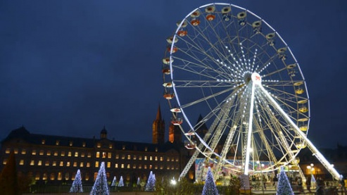
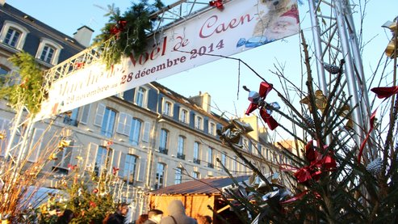

Caen fête Noël
Publié le 25 décembre 2016Laisser un commentaire
lluminations, marché de Noël, patinoire, déambulations, spectacles, projections... et une grande roue devant l'hôtel de ville. À partir du 26 novembre, pas le temps de s'ennuyer en ces fêtes de fin d'année !

